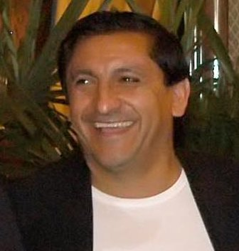

Historia Del club

(1901-1908)
Creación del club y sus primeros pasos
(1909 - 1939)
Debut en primera división, los primeros títulos, construcción del Monumental
(1940 - 1957)
La Máquina y su legado, bicampeonato y el primer tricampeonato
(1975-1983)
De vuelta a la gloria después de años sin títulos con Bicampeonato y Tricampeonato
(1984 - 1989)
Hacia la cima del mundo. Campeones de América y del Mundo

(1990-1999)
Otra década de éxitos. La primera era de Ramón Díaz, tricampeonato y gloria internacional
(2000-2009)
Frustraciones internacionales y éxitos nacionales
(2010-2014)
Del infierno al cielo. El descenso, la vuelta a primera y torneo local
(2014-act)
Gallardo y un ciclo histórico con 11 títulos